위험물산업기사 (2007-09-02 기출문제)
1과목: 일반화학
1. 2기압의 수소 2L와 3기압의 산소 4L를 동일 온도에서 5L의 용기에 넣으면 전체 압력은 몇 기압인가?
- 4/5
- 8/5
- 12/5
- 16/5
(정답률: 55%)

2. 표준상태에서 수소의 밀도는 몇 g/L 인가?
- 0.389
- 0.289
- 0.189
- 0.089
(정답률: 61%)
3. 다음 중 1차 이온화 에너지(kcal/mol)가 가장 큰 것은?
- He
- Ne
- Ar
- Xe
(정답률: 70%)
4. 방사능 붕괴의 형태 중
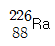
이 α 붕괴할 때 생기는 원소는?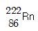
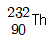
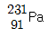
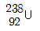
(정답률: 94%)
5. 0.1N HCl 100mL 용액에 수산화나트륨 0.32g 을 넣고 물을 첨가하여 1L로 만든 용액의 pH 값은 약 얼마인가?
- 1.7
- 2.7
- 3.7
- 4.7
(정답률: 41%)
6. 25℃에서 83% 해리된 0.1N HCl 의 pH는 얼마인가?
- 1.08
- 1.52
- 2.02
- 2.25
(정답률: 66%)
7. 불순물로 식염을 포함하고 있는 NaOH 3.2g을 물에 녹여 100mL로 한 다음 그 50mL를 중화하는데 1N의 염산이 20mL필요했다. 이 NaOH의 순도는 약 몇 wt%인가?
- 10
- 20
- 33
- 50
(정답률: 50%)
8. CuCl2의 용액에 5A 전류를 1시간 동안 흐르게 하면 몇 g의 구리가 석출되는가? (단, Cu의 원자량은 63.54 이며 전자 1개의 전하는 1.602×10-19이다.)
- 3.17
- 4.83
- 5.93
- 6.35
(정답률: 62%)
9. 방사선 중 감마선에 대한 설명으로 옳은 것은?
- 질량을 갖고 음의 전하를 띰
- 질량을 갖고 전하를 띠지 않음
- 질량이 없고 전하를 띠지 않음
- 질량이 없고 음의 전하를 띰
(정답률: 74%)
10. 벤젠의 수소 2개를 염소로 치환한 디클로로벤젠의 구조 이성질체 수는 몇 개인가?
- 5
- 4
- 3
- 2
(정답률: 79%)
11. “2,3 - Dimethyl - 1,3 - Butadiene"의 화학구조식으로 올바른 것은?
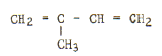
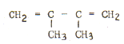
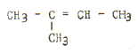
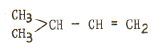
(정답률: 70%)
12. 다음 중 헨리의 법칙이 가장 잘 적용되는 기체는?
- 암모니아
- 염화수소
- 이산화탄소
- 플루오르화수소
(정답률: 85%)
13. NaOH 용액 100mL속에 NaOH 10g이 녹아 있다면 이 용액은 몇 N 농도인가?
- 1.0
- 1.5
- 2.0
- 2.5
(정답률: 48%)
14. 다음 화학반응식 중 실제로 반응이 오른쪽으로 진행되는 것은?
- 2KI + F2 → 2KF + I2
- 2KBr + I2 → 2KI + Br2
- 2KF + B r2→ 2KBr + F2
- 2KCl + Br2 → 2KBr + Cl2
(정답률: 75%)
15. 어떤 금속 1.0g을 묽은 황산에 넣었더니 표준상태에서 560mL의 수소가 발생하였다. 이 급속의 원자가는 얼마 인가? (단, 금속의 원자량은 40으로 가정한다.)
- 1가
- 2가
- 3가
- 4가
(정답률: 71%)
16. 다음 물질 중 SP3 혼성 궤도 함수와 관계가 있는 것은 무엇인가?
- CH4
- BeCl2
- BF3
- HF
(정답률: 74%)
17. 16g의 메탄을 완전 연소시키는데 필요한 산소 분자의 수는?
- 6.02×1023
- 1.204×1023
- 6.02×1024
- 1.204×1024
(정답률: 43%)
18. 고리구조를 갖지 않고 분자식이 C16H28인 탄화수소의 분자 중에는 2중 결합이 몇 개 있는가?
- 1개
- 2개
- 3개
- 4개
(정답률: 56%)
19. 산(acid)의 성질을 설명한 것 중 틀린 것은?
- 수용액 속에서 H+를 내는 화합물이다.
- pH값이 작을 수록 강산이다.
- 금속과 반응하여 수소를 발생하는 것이 많다.
- 붉은색 리트머스 종이를 푸르게 변화시킨다.
(정답률: 91%)
20. 다음 중 양쪽성 산화물에 해당하는 것은?
- NO2
- Al2O3
- MgO
- SO2
(정답률: 80%)
2과목: 화재예방과 소화방법
21. 분말소화설비의 기준에서 기압용 또는 축압용 가스로 사용이 가능한 가스로만 이루어진 것은?
- 산소, 질소
- 이산화탄소, 산소
- 산소, 아르곤
- 질소, 이산화탄소
(정답률: 83%)
22. 다음 소화약제의 반응식을 완성 할 때 ( )안에 알맞은 것을 차례대로 나열한 것은?
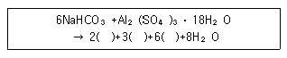
- Al(OH)3, CO2, NaOH
- NaOH, CO2, Al(OH)3
- NaSO4, CO2, Al(OH)3
- Al(OH)3, Na2SO4, CO2
(정답률: 55%)
23. 화재의 종류별 적응 소화제에 대한 설명 중 틀린 것은?
- 물은 Ca3P2의 화재에 부적당하다.
- 이산화탄소소화약제는 마그네슘분의 화재에 부적당하다.
- 이산화탄소소화약제는 칼륨의 화재에 적당하다.
- 물은 Zn(ClO3)2의 화재에 적당하다.
(정답률: 51%)
24. 다음 중 소화약제에 사용되지 않는 물질은?
- CF2ClBr
- CO(NH2)2
- (NH4)2S2O8
- K2CO3
(정답률: 60%)
25. 경유의 대규모 화재 발생 시 주수소화가 부적당한 이유에 대한 설명으로 가장 옳은 것은?
- 경유가 연소 할 때 물과 반응하여 수소가스를 발생하여 연소를 좁기 때문에
- 주수 소화하면 경유의 연소열 때문에 분해하여 산소를 발생하고 연소를 돕기 때문에
- 경유는 물과 반응하여 유독가스를 발생하므로
- 경유는 물보다 가볍고 또 물에 녹지 않기 때문에 화재가 널리 확대되므로
(정답률: 81%)
26. 다음 중 수소의 연소 범위에 가장 가까운 것은?
- 2.5 ~ 82.0%
- 5.3 ~ 13.9%
- 4.0 ~ 74.5%
- 12.5 ~ 55.0%
(정답률: 59%)
27. 옥내탱크전용실에 설치하는 탱크 상호간에는 얼마의 간격을 두어야 하는가?
- 0.1m 이상
- 0.5m 이상
- 0.6m 이상
- 1m 이상
(정답률: 79%)
28. 이산화탄소 소화약제의 저장용기 설치장소에 대한 설명으로 틀린 것은?
- 직사일광 및 빗물이 침투할 우려가 적은 장소에 설치 할 것
- 온도가 55℃ 이하인 장소에 설치할 것
- 방호구역 외의 장소에 설치할 것
- 온도변화가 적은 장소에 설치할 것
(정답률: 67%)
29. 제2류 위험물인 철분 화재시 소화설비의 적응성이 있는 것은?
- 포소화설비
- 탄산수소염류 분말소화설비
- 할로겐화합물소화설비
- 스프링클러설비
(정답률: 74%)
30. 다음 중 인화점이 낮은 것부터 순서대로 나열된 것은?
- 톨루엔, 아세톤, 벤젠
- 아세톤, 톨루엔, 벤젠
- 벤젠, 톨루엔, 아세톤
- 아세톤, 벤젠, 톨루엔
(정답률: 46%)
31. 제4류 위험물의 탱크화재에서 발생되는 BLEVE 현상에 대한 설명으로 가장 옳은 것은?
- 기름탱크에서의 수증기 폭발 현상
- 비등상태의 액화가스가 기화하여 팽창하고 폭발하는 현상
- 화재시 기름 속의 수분이 급격히 증발하여 기름거품이 되고 팽창해서 기름탱크에서 밖으로 내뿜어져 나오는 현상
- 원유, 중유 등 고정도의 기름 속에 수증기를 포함한 볼형태의 물방울이 형성되어 탱크 밖으로 넘치는 현상
(정답률: 68%)
32. 위험물안전관리에 과한 세부기중에서 개방형스프링클러 헤드를 이용하는 스프링클러설비에서 설치하는 수동식 개방밸브를 개방 조작하는데 필요한 힘은 몇kg 이하가 되도록 설치하여야 하는가?
- 5
- 10
- 15
- 20
(정답률: 63%)
33. 소화설비의 용량뵬 능력 단위에 대한 연결이 옳은 것은?
- 마른모래(삽 1개 포함) 50L - 1.0 능력단위
- 팽창질석(삽 1개 포함)160L - 1.0 능력단위
- 소화전용물통 3L - 0.3 능력단위
- 수조(소화전용 물통 6개 포함) 190L - 1.5 능력단위
(정답률: 79%)
34. 다음 [조건]하에 국소방출방식의 할로겐화물 소화설비를 설치하는 경우 저장하여야 하는 소화약제의 양은 몇 kg 이상이어야 하는가?
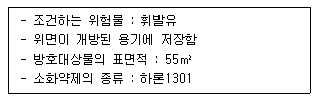
- 222.5
- 311.5
- 467.5
- 574.5
(정답률: 52%)
35. 다음 중 연소의 3요소를 모두 충족하고 있는 것은?
- S, KClO4, 정전기 불꽃
- CO2, H2O2, 백열전등의 빛
- CO2, O2, 산화열
- S, H2SO4, 증발잠열
(정답률: 67%)
36. 분말소화약제인 탄산수소나트륨 10kg이 1기압.270℃에서 방사되엇을 때 발생하는 이산화탄소의 양은 약 몇 m3 인가?
- 2.65
- 3.65
- 18.22
- 36.44
(정답률: 53%)
37. 위험물을 취급하는 건축물의 옥내 소화전이 1층에 6개, 2층에 5개, 3층에 4개가 설치되었다. 이 때 수원의 수량은 몇 m3 이상이 되도록 설치하여야 하는가?
- 23.4
- 31.8
- 39.0
- 46.8
(정답률: 89%)
38. 중유의 주된 연소 형태는 다음 중 어느 것인가?
- 표면연소
- 분해연소
- 증발연소
- 자기연소
(정답률: 57%)
39. 제6류 위험물의 화학적 성질과 위험성에 대한 설명 중 틀린 것은?
- 모두 가연성 물질이기 때문에 화기의 접근에 주의를 해야 한다.
- 모두 분자 내부에 산소를 갖고 있다.
- 모두 지정수량이 300kg 이다.
- 모두 액체상태의 물질이다.
(정답률: 53%)
40. 가압식의 분말소화설비에는 얼마 이하의 압력으로 조정할 수 있는 압력조정기를 설치하여야 하는가?
- 2.0MPa
- 2.5MPa
- 3.0MPa
- 5MPa
(정답률: 70%)
3과목: 위험물의 성질과 취급
41. 삼황화린에 대한 설명 중 틀린 것은?
- 황색의 결정성 덩어리이다.
- 염산, 황산에 잘 용해된다.
- 발화점은 약 100℃ 이다.
- 물에는 녹지 않는다.
(정답률: 30%)
42. 과염소산나트륨의 성질에 대한 설명 중 가장 거리가 먼 것은?
- 무취, 무색의 결정이다.
- 비중은 약 2.5이다.
- 물에 잘 녹는다.
- 알코올이나 아세톤에 녹지 않는다.
(정답률: 60%)
43. 위험물을 저장 또는 취급하는 탱크의 용량산정 방법에 관한 설명으로 가장 옳은 것은?
- 당해 탱크의 내용적에서 공간용적을 뺀 용적으로 한다.
- 당해 탱크의 전체 부피를 탱크의 용량으로 한다.
- 당해 탱크의 볼록하거나 오목한 부분을 뺀 내용적으로 한다.
- 당해 탱크의 내용적의 3%를 제외한 용적으로 한다.
(정답률: 86%)
44. 은백색이며 묽은 질산에 녹고 비중이 약 2.7인 금속은?
- 아연분
- 마그네슘분
- 안티몬분
- 알루미늄분
(정답률: 77%)
45. 다음 위험물 중 물과 반응하여 연소범위가 약 2.5~81%인 위험한 가스를 발생시키는 것은?
- Na
- P
- CaC2
- Na2O2
(정답률: 69%)
46. 판매취급소의 위치ㆍ구조 및 설비의 기준에서 위험물을 배합하는 실의 바닥 면적은 얼마로 하여야 하는가?
- 5m2 이상 20m2 이하
- 6m2 이상 15m2 이하
- 10m2 이상 20m2 이하
- 20m2 이상 30m2 이하
(정답률: 48%)
47. 벤젠의 일반적 성질에 관한 사항 중 틀린 것은?
- 알코올, 에테르에 녹는다.
- 물에는 녹지 않는다.
- 냄새는 무취이고 색상은 갈색인 휘발성 액체이다.
- 증기 비중은 약 2.8이다.
(정답률: 70%)
48. 다음 물질 중 지정수량이 2000L 인 것은?
- 염화아세틸
- 노르말헥산
- 메틸에틸케톤
- 포름산
(정답률: 50%)
49. 위험물을 차량으로 지정수량 이상 운반시에 지켜야 할 사항에 해당되지 않는 것은?
- 적응성이 있는 소형수동식소화기를 위험물의 소요단위에 상응하는 능력단위 이상 갖추어야 한다.
- “위험물”이라고 표시한 표지를 차량 좌우면의 보기 쉬운 곳에 부착하여야 한다.
- 차량을 일시 정차시킬 때에는 안전한 장소를 택하여야 한다.
- 재난발생의 우려가 있는 경우는 응급조치를 강구하는 동시에 가까운 소방관서 그밖의 관계기관에 통보하여야 한다.
(정답률: 54%)
50. 질산에틸의 성상에 관한 설명 중 틀린 것은?
- 향기를 갖는 무색의 액체이다.
- 휘발성 물질로 증기 비중은 공기보다 가볍다.
- 물에는 녹지 않으나 에테르에 녹는다.
- 비점 이상으로 가열하면 폭발의 위험이 있다.
(정답률: 49%)
51. 황린을 밀폐용기 속에서 260℃ 로 가열하면 엊은 물질을 연소시킬 때 주로 생성되는 물질은?
- P2O5
- CO2
- PO2
- CuO
(정답률: 83%)
52. 위험물과 그 위험물이 물과 접촉하여 발생하는 기체를 옳게 연결한 것은?
- 인화칼슙 - 포스핀
- 과산화칼륨 - 아세틸렌
- 나트륨 - 산소
- 탄화칼슘 - 수소
(정답률: 79%)
53. 메틸알코올에 대한 설명 중 틀린 것은?
- 무색투명한 액체이다.
- 연소 범위는 에틸알코올 보다 좁다.
- 마셨을 경우 시신경 마비의 위험이 있다.
- 물에 잘 녹는다.
(정답률: 69%)
54. 제4류 위험물의 성질 및 취급시 주의사항에 대한 설명 중 가장 거리가 먼 것은?
- 액체의 비중은 물보다 가벼운 것이 많다.
- 대부분 증기는 공기보다 무겁다.
- 제1석유류와 제2석유류는 비점으로 구분한다.
- 정전기 잘생에 주의하여 취급하여야 한다.
(정답률: 74%)
55. 위험물 운반 및 수납시 주의 사항에 대한 설명 중 틀린 것은?
- 위험물을 수납하는 용기는 위험물이 누출되지 않게 밀봉시켜야 한다.
- 온도 변화로 가스발생 우려가 있는 것은 가스 배출구를 설치한 운반용기에 수납할 수 있다.
- 액체 위험물은 운반용기 내용적의 98% 이하의 수납율로 수납하되 55℃의 온도에서 누설되지 아니하도록 충분한 공간 용적을 유지하도록 하여야 한다.
- 고체 위험물은 운반용기 내용적의98% 이하의 수납율로 수납하여야 한다.
(정답률: 79%)
56. 염소산칼륨의 위험성에 관한 설명 중 틀린 것은?
- 이상화망간 존재시 분해가 촉진되어 산소를 방출한다.
- 강력한 산화제이다.
- 황, 목탄 등과 혼합된 것은 위험하다.
- 물과 반응하면 위험하므로 주수소화는 피해야 한다.
(정답률: 54%)
57. 위험물을 수납한 운반용기의 외부에 표시하여야 할 사항이 아닌 것은?
- 위험등급
- 위험물의 수량
- 위험물의 품명
- 안전관리자의 이름
(정답률: 84%)
58. 금속칼륨의 성질에 대한 설명으로 옳은 것은?
- 중금속류에 속한다.
- 이온화경향이 큰 금속이다.
- 물 속에 보관한다.
- 고광택을 내므로 장식용으로 많이 쓰인다.
(정답률: 73%)
59. 수납하는 위험물에 따라 위험물 운반용기의 외부에 표시하여야 하는 주의사항의 연결이 틀린 것은?
- 제2류 위험물 중 철분 - “화기주의” 및 “물기엄금”
- 제2류 위험물 중 인화성고체 - “ 화기엄금”
- 제4류 위험물 - “화기엄금 ”
- 제6류 위험물 - “화기주의”
(정답률: 68%)
60. 1기압 27℃ 에서 아세톤 58g 을 완전히 기화시키면 부티는 약 몇 L 가 되는가?
- 22.4
- 24.6
- 27.4
- 58.0
(정답률: 63%)
먼저, 수소와 산소의 몰 수를 구해보자.
수소의 경우, P=2기압, V=2L, T=일정 온도, R=기체상수이므로,
n(H2) = (P x V) / (R x T) = (2 x 2) / (0.082 x T) = 48.78 / T (단위: mol)
산소의 경우, P=3기압, V=4L, T=일정 온도, R=기체상수이므로,
n(O2) = (P x V) / (R x T) = (3 x 4) / (0.082 x T) = 146.34 / T (단위: mol)
따라서, 전체 몰 수는 n(H2) + n(O2) = 48.78/T + 146.34/T = 195.12/T (단위: mol) 이다.
전체 용기의 부피는 5L 이므로, 전체 몰 수에 대한 전체 압력은 다음과 같다.
P = (n(H2) + n(O2)) x (R x T) / V = (195.12/T) x (0.082 x T) / 5 = 16.136/5 (단위: 기압)
따라서, 정답은 "16/5" 이다.